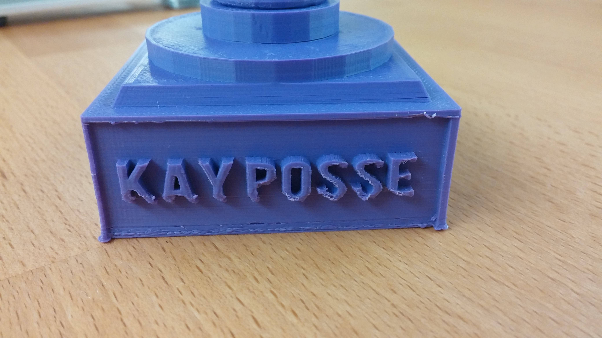

30 Aug 2016
Raising and rescuing errors in Rails is relatively easy. All you need to do is make a custom error class, raise it (usually in a model) and rescue it (usually in a controller).
Start by making a custom error class that inherits from StandardError. This will give you a more descriptive error instead of raising the generic StandardError, so you can better deduce where the error came from.
I will use a hypothetical example of an error that is raised when a User is being created.
class UserCreateError < StandardError
end
Each custom error class should have it’s own file which you can put in an app/errors directory.
Here I will raise the error in a User model method.
class User < ActiveRecord::Base
def self.example_method
raise UserCreateError
end
end
When the create action is called on the controller, it will call User.example_method, which will raise the error. The error then goes back up to the controller where it is rescued.
class UsersController < ApplicationController
def create
User.example_method
rescue UserCreateError
render json: "Invalid User Information", status: :bad_request
end
end
Note the indentation of the rescue is on the same column as the def.
Whatever you put underneath the rescue will be run if there is an error.
Here I render a custom json error message and specify an optional status code.
15 Jul 2016
Does initialize need to be used all the time in a class? No.
You only need it to set instance variables and to allow passing of arguments when instantiating a class.
Example one: You don’t need it to instantiate a class
Let’s make a class with a single instance method and no initialize method.
class Holiday
def statement
"I'm going to the beach"
end
end
puts Holiday.new
puts Holiday.new.statement
If we run the code, the “puts” outputs the following, and we see that Holiday.new instantiates an object just fine and we can call the method statement on it:
#<Holiday:0x007fe194093d00>
I'm going to the beach
Example two: You don’t need it to use attr_accessors
Let’s make a class with an attr_accessor and no initialize method. We instantiate two different holiday objects, and then using the attr_accessors set a separate location attribute for each.
class Holiday
attr_accessor :location
def statement
"I'm going on holiday to #{location}"
end
end
holiday1 = Holiday.new
holiday2 = Holiday.new
holiday1.location = "Europe"
holiday2.location = "Hawaii"
puts holiday1.statement
puts holiday2.statement
The output shows that the attr_accessors still work without the initialize method.
I'm going on holiday to Europe
I'm going on holiday to Hawaii
Example three: You DO need it to set instance variables
The following is a class that tries to set an instance variable @word to equal “whatever”.
The output is nothing, because instance variables need to be put inside an initialize method.
class Random
@word = "whatever"
def whatever
@word
end
end
puts Random.new.whatever
The following will correctly result in an output of “whatever”.
class Random
def initialize
@word = "whatever"
end
def whatever
@word
end
end
puts Random.new.whatever
Example four: You DO need it to allow arguments to be passed in when instantiating a Class
The following code tries to pass in a string argument into the “new” method.
```
class Random
end
puts Random.new(“whatever”)
```
This results in an error.
new.rb:35:in `initialize': no implicit conversion of String into Integer (TypeError)
from new.rb:35:in `new'
from new.rb:35:in `<main>'
You need to specify that there are arguments in the initialize method for “new” method to be able to take any.
However, you don’t have to actually do anything with the arguments in the initialize method.
```
class Random
def initialize(word)
end
end
puts Random.new(“whatever”)
```
This will result in the object being successfully instantiated, as shown in the output below.
#<Random:0x007fbbb9170cd8>
If you wanted to actually have access to the attribute then you would have to set it as an instance variable inside the initialize method, and set an attr_reader.
```
class Random
attr_reader :word
def initialize(word)
@word = word
end
end
puts Random.new(“whatever”).word
```
Which will output “whatever”.
13 Jul 2016
Throughout the code base of our Rails app at work, we have many Rspec tests that use spies, doubles and instance_doubles. I found most of the information on the web about them to be very theoretical and not practical. My coworker then explained it to me very clearly as follows:
-
All three terms belong under an umbrella term called “doubles”. In other words, a spy is a type of double, and so is an instance_double.
-
Spies, doubles, and instance_doubles are doubles that increase in their power of specificity in that order. So a double is more specific than a spy and an instance_double is more specific than a double.
The best way to demonstrate how they work is to pry into an rspec file. This assumes that you are already familiar with setting up an Rspec test file in a Rails app. In the Rspec file, inside an “it” block place a binding.pry.
it "demonstrates doubles" do
binding.pry
end
In the pry session, define a spy, then try to call undefined methods on it. It will keep returning a double. So spies, are just generic doubles that will keep giving you a double no matter what methods you call on them.
pry(#<RSpec>)> s=spy
=> #<Double (anonymous)>
pry(#<RSpec>)> s.what?
=> #<Double (anonymous)>
pry(#<RSpec>)> s.anything?
=> #<Double (anonymous)>
Moving towards more specificity, define a double. Below a double is defined with a method called name that returns the string “androidgrl”. When we call name on the double it returns “androidgrl”. What happens when we call an undefined method like “age” on the double? It gives us an error unlike with spies. So with doubles, you have to define methods that can be called on them.
pry(#<RSpec>)> d=double(name: "androidgrl")
=> #<Double (anonymous)>
pry(#<RSpec>)> d.name
=> "androidgrl"
pry(#<RSpec>)> d.age
RSpec::Mocks::MockExpectationError: #<Double (anonymous)> received unexpected message :age with (no args)
from /opt/active/acl_api/current/vendor/bundle/ruby/2.1.0/gems/rspec-support-3.3.0/lib/rspec/support.rb:86:in `block in <module:Support>'
And finally, we have the most specific type of double, instance_doubles. Here we have to specify which Class we’re defining the double for. This has to be an actual class that exists either in your application or inherited through Ruby. Here we’re stubbing out the “count” method on the Array class to always return 3. Notice that when we try to define a method on Array that doesn’t actually exist we get an error. Also when we try to make an instance double for a Class that doesn’t exist we get an error.
pry(#<RSpec>)> i=instance_double(Array, count: 3)
=> #<InstanceDouble(Array) (anonymous)>
pry(#<RSpec>)> i.count
=> 3
pry(#<RSpec>)> i=instance_double(Array, whatever: "?")
RSpec::Mocks::MockExpectationError: the Array class does not implement the instance method: whatever
from /opt/active/acl_api/current/vendor/bundle/ruby/2.1.0/gems/rspec-support-3.3.0/lib/rspec/support.rb:86:in `block in <module:Support>'
pry(#<RSpeci=instance_double(FakeClass, fake_method: "fake")
NameError: uninitialized constant TM::FakeClass
from (pry):14:in `block (2 levels) in <module:TM>'
In summary:
-
Instance_doubles have to be defined on Classes that actually exist in your code and you can only stub methods that actually exist.
-
Doubles can have any methods called on them as long as you define them in the double.
-
Spies don’t need to have anything defined on them and will always return a double.
10 Oct 2015
Have business cards that truly stand out! The next time you give your business card to someone, impress them with a 3D printed business card with your own portrait on it! This tutorial will show you how to use Tinkercad, a free online 3D design tool. Tinkercad is easy-to-use and is web-based, so there is no need to download anything. This design takes only 15 minutes to create.
I have included a video demonstrating the process below. I suggest following along with the video, and then using the written instructions below as a reference.
 Youtube tutorial
Youtube tutorial
Sign up for Tinkercad and Thingiverse accounts:
- Sign up for a free Tindercad account
- Sign up for a free Thingiverse account
Create a lithopane portrait:
- Go to Thingiverse lithopane generator
- Click on “open in customizer”
- Choose the small pane size, and click “invert colors”
- Choose the jpg file that you want to use for your portrait
- Click “create thing”
It will take a few minutes for your lithopane to be generated. You will be able to see it by clicking on the dropdown arrow next to your avatar photo on the top right of the page, and selecting “My Things”.
- When it’s ready, download the .stl file by clicking on “Thing Files” and selecting the file.
Create the business card base:
- Sign into Tinkercad and click on “Create New Design”
- Under shape generators select geometric option, and select the red box. Drag it to the workplane and click to deposit.
- I recommend using a mouse- it’s much easier than using the touchpad. To zoom in and out, turn the scroll wheel. To rotate your view around the model, right click and drag.
- The standard size of business cards in the US is 89 X 51mm. We’ll use the ruler tool to manually enter the dimensions of the card. On the toolbar on the top, select the grid, then select the ruler. Drag it next to the red box and click. Now click on the red box, the dimensions will show up. Click on the width and enter 89.00, click on the height and enter 51.00, finally click on the thickness and enter 1.00.
- Another shape manipulation feature is the black arrow you see on the top of the box. Click and drag it up to lift the card off of the workplane. To drop the card back onto the workplane, just press “d”.
Create the business card text:
- Under the Shape Generator’s menu, select Tinkercad, and click on the “TEXT” icon. Drag it to the workplane and click to deposit.
You’ll notice an Inspector window will automatically appear on the right. In the “Text” field enter your name.
- Select the ruler tool again, and manually enter the following dimensions for your name: 5mm high, 40mm wide, 0.5mm thick.
- Now we’re going to drop the text on top of the card by creating a new workplane on top of the card. Select the workplane tool. Click anywhere on the top surface of the card. This creates a new orange workplane. Drag the text to be on top of the card. Then type “d” and the text gets “dropped” on top of the new workplane. We don’t need the new workplane anymore so to get rid of it, select the workplane tool again and click anywhere outside the orange workplane.
- To make the twitter handle, phone number, title and email fields, click on your name text, then copy and paste from the edit menu, 4 times. Drag these texts onto the card.
To change the text, click on it and edit it with the Inspector that pops up.
Make any adjustments you want to the width of the text by manually entering it using the ruler. Line them up on the left side of the card. The horizontal placement doesn’t have to be exact now, but you’ll want the vertical spacing between the lines of text to be exactly how you want. For fine adjustments, change the snap grid setting on the bottom right corner to 0.1mm.
- To horizontally align, shift click on all lines of text, and then select “Adjust” from the toolbar and select “Align”. This will place an align tool on the card. Click on the bottom right dot, and your text will be aligned to the right.
Finally group all the text and the card base together by clicking and dragging to draw a square around the card. Select “Group” on the toolbar.
Add the lithopane portrait:
- Under “Import” choose your .stl file that you downloaded from Thingiverse. Click on “Import”. It takes a minute or two to upload.
Adjust it to the size you want by clicking and dragging on one of the small white squares on the corners.
- Next we need to get rid of the raised edges, and the top loop. Under “Letters” select the letter “I” and drag it onto the workplane. Make 3 more copies. You can use the copy and edit from the Edit menu, or you can just use the keyboard shortcuts cmd+c for copy and cmd+v for paste. Make each “I’ big enough to cover each raised edge. The top one needs to be thick enough to cover the loop. You don’t have to be exact, the point is to just cover the edges.
- Next, shift click on all 4 of them, and in the Inspector box on the top right, select “Hole”.
Draw a box around it and select “Group”. This will remove any material where you have put the holes.
- Finally, drag the lithopane onto the card.
Draw a box around the whole card and select “Group”.
- That’s it! You can download the .stl file to be 3D printed by selecting the ”Design” menu and selecting “Download for 3D printing”.
07 Aug 2015
This is a tutorial on how to add custom text to a 3D model, using Tinkercad’s free easy-to-use web-based 3D modeling tool. This is great for adding personal messages and names to your prints! In this tutorial I will add custom text to a trophy downloaded from Thingiverse.

Pictured here is a trophy with custom text added
Since it is much easier to demonstrate how to do this with a video, I have made a short
7 minute Youtube video which demonstrates:
-
How to download the file from Thingiverse.
-
How to remove the pre-existing text from the model using Tinkercad.
-
How to add your own custom text.